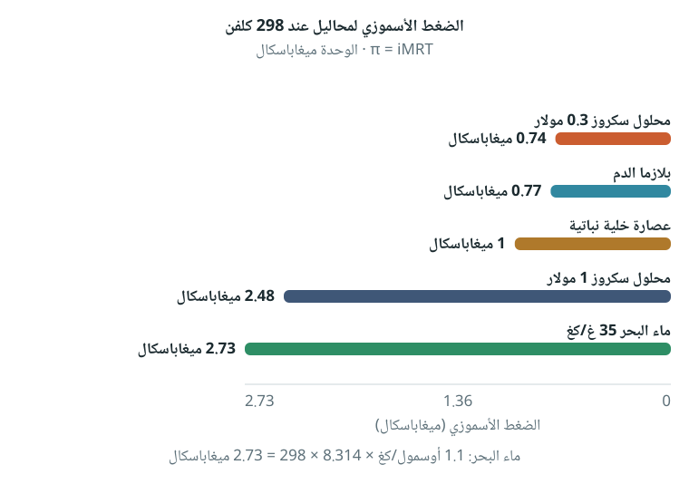

الأسموزية والضغط الأسموزي
Osmosis
انتقال الماء عبر غشاء نصف نافذ من الجانب الأعلى كمونًا مائيًّا إلى الأدنى، مدفوعًا بفرق أنشطة الماء لا بضغط المذاب؛ والضغط الخارجي الذي يوقفه هو الضغط الأسموزي π = iMRT.
الأسموزية انتقال جزيئات الماء عبر غشاء نصف نافذ من الجانب ذي الكمون المائي الأعلى إلى الأقل. الغشاء يمرّر الماء ويعوق المذاب، فينشأ فرق في تركيز المذاب على وجهيه. هذا الفرق يخفض كمون الماء في الجانب الأكثر مذابًا، فيتحرك الماء نحوه حتى يتعادل الكمونان.
في الخلية النباتية يقابل هذا التدفق ضغط جدار مرن، فيتوقف الدخول عند تورّق مضبوط؛ وفي خلية حيوانية بلا جدار يستمر الدخول حتى الانحلال. الضغط الأسموزي هو الضغط الخارجي اللازم لإيقاف التدفق تمامًا، ويحسب للمحاليل المخففة بعلاقة فانت هوف π = iMRT، حيث i عدد الأيونات الناتجة عن تفكك الجزيء وM التركيز المولي وR ثابت الغازات وT الحرارة المطلقة.
الآلية
كيف يحدث الأمر على مستوى الجسيمات أو المتغيّرات المباشرة
تبدأ السلسلة بفرق الكمون الكيميائي للماء: Ψw = Ψs + Ψp + Ψg، حيث Ψs جهد المذاب السالب وΨp الضغط الهيدروستاتيكي وΨg الجهد التثاقلي. إذابة مذاب تخفض نشاط الماء a_w، والكمون الكيميائي µ = µ° + RT·ln(a_w)، فينخفض على الجانب الأكثر مذابًا. الماء ينتقل تلقائيًّا نحو الجانب الأقل كمونًا، أي نحو نشاط الماء الأدنى، لا نحو التركيز الأعلى باعتباره تعريفًا عدديًّا. كل جزيء يعبر الغشاء مستقلًّا بانتشاره، لكن الصافي تدفق جماعي يتوقف عندما يتساوى الكمونان: دخول الماء يرفع الضغط الهيدروستاتيكي داخل الخلية، فيعيد Ψp رفع الكمون حتى يوازن النقص في Ψs.
الأرقام والوحدات
العلاقات والوحدات والنطاقات العددية التي تسند الشرح
π = iMRT. ماء بحر بملوحة 35 غ/كغ يعطي نحو 1.1 أوسمول/كغ من الأيونات الذائبة، وعند 298 كلفن يكون π = 1.1 × 8.314 × 298 = 2.73 ميغاباسكال، أي ما يعادل 27 ضغطًا جويًّا. بلازما الدم تقارب 0.3 أوسمول/ل، فتعطي عند 310 كلفن π = 0.3 × 8.314 × 310 = 0.77 ميغاباسكال، وهو أصل اشتراط تراتب المحاليل الوريدية عند هذا الحد. محلول سكروز غير متفكك عند 1 مول/ل يعطي 2.48 ميغاباسكال لأن i = 1. ماء عذب بتركيز أيوني 0.01 مول/ل يعطي 0.025 ميغاباسكال فقط، فالفرق بين النهر والبحر هو ما يفرض على الأسماك ضبطًا أسموزيًّا دائمًا.
الفرق الدقيق
المفهوم الملتبس الذي يُخلَط به، وأين ينفصلان
الخلط الأول: الأسموزية ليست انتشار المذاب؛ المذاب لا يعبر الغشاء نصف النافذ أصلًا، والماء هو المتحرك. الثاني: الأسموزية عملية والضغط الأسموزي مقدار؛ الأول وصف تدفق والثاني ضغط يقاس بوحدة الضغط. الثالث: التورّق ليس هو الضغط الأسموزي بل محصلته بعد طرح ضغط الجدار. الرابع: الانتشار البسيط لا يحتاج غشاء ولا يتوقف عند توازن ضغطي، أما الأسموزية فشرطها غشاء انتقائي وفرق نشاط مائي ومساحة تبادل.
حدود التعريف
أين ينكسر التعريف أو النموذج وما الذي لا يفسّره
علاقة فانت هوف صحيحة في حدّ التخفيف: فوق تركيز 0.1 مول/ل تظهر انحرافات معاملات النشاط، فيقل الضغط المقاس عن iMRT. وتفترض ثبات الحرارة وسلوك الغاز المثالي، وتنهار في محاليل البوليمرات حيث i ليس عددًا صحيحًا. الغشاء الحيوي ليس نصف نافذ مثاليًّا: يمرّر أيونات وأحماضًا أمينية بمعدلات محدودة، فالتوازن الفعلي في الخلية يتحدد بالنقل النشط ومضخات الأيونات لا بالأسموزية وحدها، ويستهلك ذلك ATP. وفي الأنسجة يلزم نموذج ثلاثي الأبعاد لانتشار الماء والملح معًا، لأن الضغط داخل الخلية ينتقل إلى النسيج المحيط.

| الكمية | القيمة | المصدر |
|---|---|---|
| الضغط الأسموزي لماء البحر (35 غ/كغ) عند 298 كلفن | 2.73 ميغاباسكال | [2] |
| ما يعادله من الضغط الجوي | 27 ضغط جوي | [2] |
| الضغط الأسموزي لبلازما الدم عند 310 كلفن | 0.77 ميغاباسكال | [1] |
| التركيز الأيوني الكلي لماء البحر | 1.1 أوسمول/كغ | [2] |
المصادر
- 1 Biology 2e — 5.2 Passive Transport — OpenStax. openstax.org/books/biology-2e/pages/5-2-passive-transport · اطُّلع عليه 2026-11-16
- 2 Chemistry 2e — 11.4 Colligative Properties — OpenStax. openstax.org/books/chemistry-2e/pages/11-4-colligative-properties · اطُّلع عليه 2026-11-16
استشهد بهذا المصطلح
الصيغتان مبنيتان من بيانات الصفحة نفسها: العنوان والتاريخ ورابط النسخة المنشورة.
الأسموزية والضغط الأسموزي — Osmosis. (2026). ديوان المعرفة — انفراد. https://infiradev.com/diwan/terms/osmosis.html
@misc{osmosis2026,
title = {الأسموزية والضغط الأسموزي},
titleaddon = {Osmosis},
howpublished = {{ديوان المعرفة — انفراد} — مرجع علمي عربي},
year = {2026},
url = {https://infiradev.com/diwan/terms/osmosis.html},
urldate = {2026-11-16},
note = {مراجعة علمية: مراجعة آلية — ديوان المعرفة (روابط المصادر + عقد المحتوى + وجود الرسم) 2026-11-16}
}
راجعه: مراجعة آلية — ديوان المعرفة (روابط المصادر + عقد المحتوى + وجود الرسم) 2026-11-16 · 2026-11-16 · آخر تحديث 2026-11-16